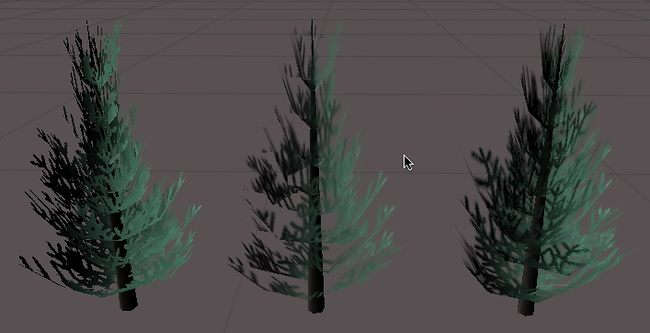

传统的 Alpha Testing
alpha测试是拒绝将像素写入屏幕的最后机会。
注：当使用片段程序时，透明度测试命令是没有效果的；大多数平台上的测试是使用HLSL着色器做clip()功能。建议使用可编程着色器这些天而不是SetTexture命令。
在计算最终输出颜色后，颜色可以相对于固定值具有alpha值。如果测试失败，则像素不会写入显示器。
语法：
AlphaTest Off
渲染所有像素（默认）或… 比较alphavalue AlphaTest
设置alpha测试只渲染alpha值在一定范围内的像素。
比较
比较是下列单词之一：
| 关键字 | 说明 |
|---|---|
| Greater | 只渲染像素的α大于alphavalue。 |
| GEqual | 只渲染像素的α大于或等于alphavalue。 |
| Less | 小于 |
| LEqual | 小于等于 |
| Equal | 等于 |
| NotEqual | 不等于 |
| Always | 渲染所有像素。这是功能上等同于透明度测试了。 |
| Never | 不渲染任何像素。 |
AlphaValue
介于1和0之间的浮点数。这也可以是一个变量引用类型或范围的属性，在这种情况下，应该使用标准的方括号（[变量名]）。
([VariableName])。
细节：
在透明物体上绘制凹形物体时，α测试非常重要。图形卡维护记录到屏幕上的每个像素的深度记录。如果一个新像素比已经渲染的像素更远，新像素就不会写入显示器。这意味着即使混合，对象也不会显示通过。
 
在这张图中，左边的树使用透明度测试。注意它的像素是完全透明的还是不透明的。中心树只使用alpha混合，注意附近分支的透明部分是如何覆盖远端叶子的，因为深度缓冲。右边的树使用最后一个示例着色器渲染，它实现了混合和alpha测试的组合，以隐藏任何伪影。
示例：
最简单的例子，给它分配一个alpha通道的纹理。只有alpha大于0.5时，对象才会可见。
Shader "Simple Alpha Test" {
Properties {
_MainTex ("Base (RGB) Transparency (A)", 2D) = "" {}
}
SubShader {
Pass {
// Only render pixels with an alpha larger than 50%
AlphaTest Greater 0.5
SetTexture [_MainTex] { combine texture }
}
}
}
这本身就不太好。让我们添加一些灯光使截止值可调：
Shader "Cutoff Alpha" {
Properties {
_MainTex ("Base (RGB) Transparency (A)", 2D) = "" {}
_Cutoff ("Alpha cutoff", Range (0,1)) = 0.5
}
SubShader {
Pass {
// Use the Cutoff parameter defined above to determine
// what to render.
AlphaTest Greater [_Cutoff]
Material {
Diffuse (1,1,1,1)
Ambient (1,1,1,1)
}
Lighting On
SetTexture [_MainTex] { combine texture * primary }
}
}
}
当呈现植物和树木,许多游戏有硬边α测试的典型。的方式来呈现对象两次。在第一遍,我们使用alpha测试仅呈现像素超过50%不透明。在第二步中,我们alpha-blend图形的部分切掉,没有记录像素的深度。我们可能会有点混乱远分支覆盖附近的,但在实践中,很难看到叶子有很多视觉细节。
Shader "Vegetation" {
Properties {
_Color ("Main Color", Color) = (.5, .5, .5, .5)
_MainTex ("Base (RGB) Alpha (A)", 2D) = "white" {}
_Cutoff ("Base Alpha cutoff", Range (0,.9)) = .5
}
SubShader {
// Set up basic lighting
Material {
Diffuse [_Color]
Ambient [_Color]
}
Lighting On
// Render both front and back facing polygons.
Cull Off
// first pass:
// render any pixels that are more than [_Cutoff] opaque
Pass {
AlphaTest Greater [_Cutoff]
SetTexture [_MainTex] {
combine texture * primary, texture
}
}
// Second pass:
// render in the semitransparent details.
Pass {
// Dont write to the depth buffer
ZWrite off
// Don't write pixels we have already written.
ZTest Less
// Only render pixels less or equal to the value
AlphaTest LEqual [_Cutoff]
// Set up alpha blending
Blend SrcAlpha OneMinusSrcAlpha
SetTexture [_MainTex] {
combine texture * primary, texture
}
}
}
}
Note that we have some setup inside the SubShader, rather than in the individual passes. Any state set in the SubShader is inherited as defaults in passes inside it.